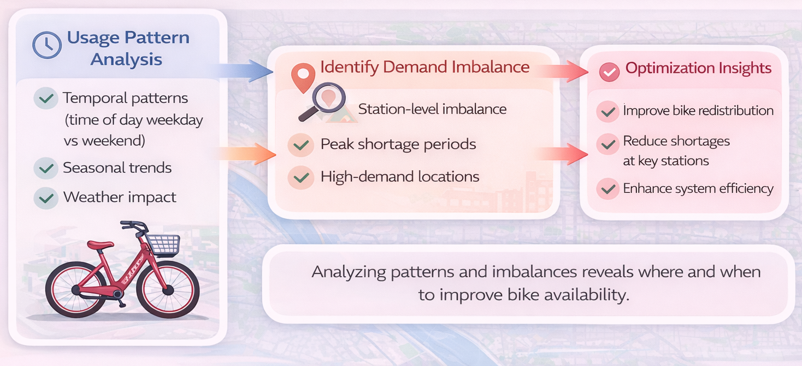
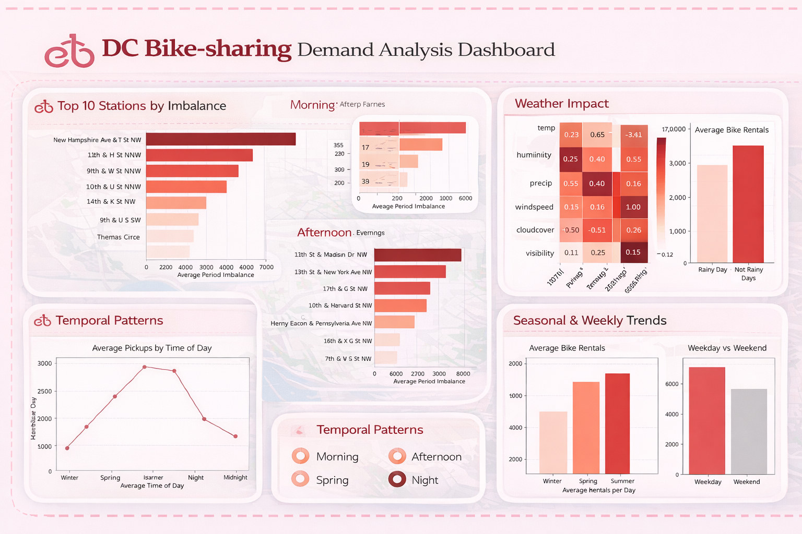

operations analytics case study
Demand Prediction and Optimization of Capital Bikeshare System in Washington D.C.
— Spatial-temporal demand analysis to improve rebalancing decisions and station-level fleet planning.

Overview / Description
Bike-sharing is now a key part of urban transportation, but rapid system growth can create station imbalance: bikes accumulate at some stations while others run empty.
This project analyzed Capital Bikeshare usage patterns to identify the operational drivers behind demand and rebalancing needs.
Objective / Success Metrics
Understand how time, weather, and geography shape ridership patterns, then translate those findings into practical recommendations for fleet balancing and station-level planning.
Approach
1) Temporal analysis
- Identified seasonal peaks and weekday vs. weekend usage differences.
- Observed strong commuter peaks on weekdays and more sustained casual demand on weekends.
2) Weather analysis
- Built a correlation heatmap to quantify the effect of weather variables on ridership.
- Found that moderate temperatures, gentle breezes, and partly cloudy conditions were associated with peak daily rentals.
3) Geospatial and station imbalance analysis
- Mapped top and bottom-performing stations.
- Identified severe pick-up vs. drop-off imbalances during the night shift at major commuter hubs.

Results / Key Findings
- Demand varies significantly by season, time of day, and day type.
- Weather conditions materially influence ride volume.
- Central commuter stations experienced the most operational imbalance, particularly between 17:00 and 24:00.
Impact / Conclusion / Recommendations
- Prioritize rebalancing truck operations during the 17:00–24:00 window at central transit hubs.
- Improve suburban station usage through targeted promotions or integration with bus/metro pass bundles.
- Use these findings to support more data-driven demand forecasting and fleet allocation.